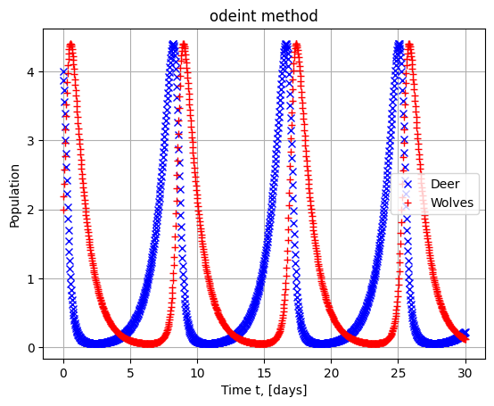
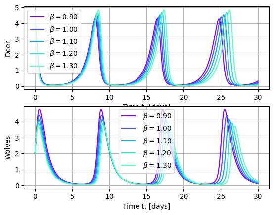
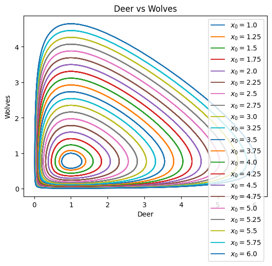
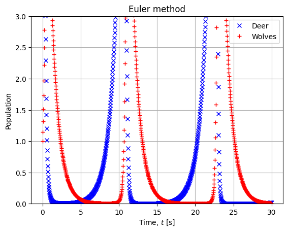
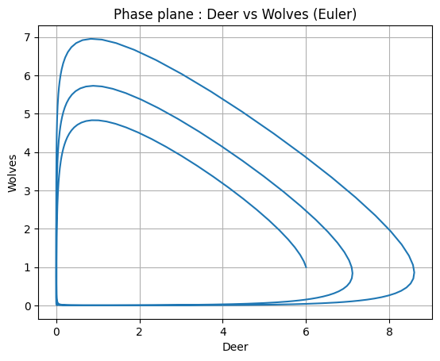
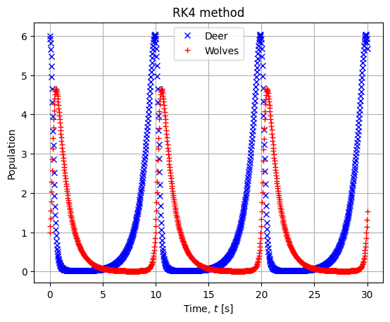
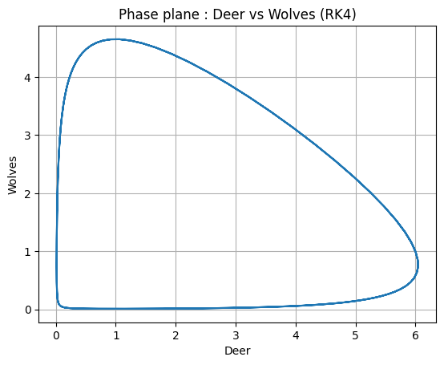

%matplotlib notebook
import numpy as np
import pandas as pd
import matplotlib.pyplot as plt
from scipy import integrate
import ipywidgets as ipw
%matplotlib inlineLotka-Volterra equations
Also known as predator-prey equations, describe the variation in populations of two species which interact via predation. For example, wolves (predators) and deer (prey). This is a classical model to represent the dynamic of two populations.
Let \(\alpha>0\), \(\beta>0\), \(\delta>0\) and \(\gamma>0\) . The system is given by
\[\left\{ \begin{array}{ll} \dot{x} = x (\alpha - \beta y)\\ \dot{y} = y (-\delta + \gamma x) \end{array} \right. \]
Where \(x\) represents prey population and \(y\) predators population. It’s a system of first-order non-linear ordinary differential equations.
Problem reformulation
We pose, \[X = \begin{pmatrix} x \\ y \end{pmatrix}\] and rewrite so the problem above as
\[ \dot{X} = \begin{pmatrix} x (\alpha - \beta y) \\ y (-\delta + \gamma x) \end{pmatrix} = f(X)\]
Remark : it’s an autonomous problem.
Numerical simulation
Settings
alpha = 1. #mortality rate due to predators
beta = 1.
delta = 1.
gamma = 1.
x0 = 4.
y0 = 2.
def derivative(X, t, alpha, beta, delta, gamma):
x, y = X
dotx = x * (alpha - beta * y)
doty = y * (-delta + gamma * x)
return np.array([dotx, doty])Solving with odeint
Nt = 1000
tmax = 30.
t = np.linspace(0.,tmax, Nt)
X0 = [x0, y0]
res = integrate.odeint(derivative, X0, t, args = (alpha, beta, delta, gamma))
x, y = res.Tplt.figure()
plt.grid()
plt.title("odeint method")
plt.plot(t, x, 'xb', label = 'Deer')
plt.plot(t, y, '+r', label = "Wolves")
plt.xlabel('Time t, [days]')
plt.ylabel('Population')
plt.legend()
plt.show()
import random
import matplotlib.cm as cm betas = np.arange(0.9, 1.4, 0.1)
nums=np.random.random((10,len(betas)))
colors = cm.rainbow(np.linspace(0, 1, nums.shape[0])) # generate the colors for each data set
fig, ax = plt.subplots(2,1)
for beta, i in zip(betas, range(len(betas))):
res = integrate.odeint(derivative, X0, t, args = (alpha,beta, delta, gamma))
ax[0].plot(t, res[:,0], color = colors[i], linestyle = '-', label = r"$\beta = $" + "{0:.2f}".format(beta))
ax[1].plot(t, res[:,1], color = colors[i], linestyle = '-', label = r" $\beta = $" + "{0:.2f}".format(beta))
ax[0].legend()
ax[1].legend()
ax[0].grid()
ax[1].grid()
ax[0].set_xlabel('Time t, [days]')
ax[0].set_ylabel('Deer')
ax[1].set_xlabel('Time t, [days]')
ax[1].set_ylabel('Wolves');
Phase portrait
The phase portrait is a geometrical representation of the trajectories of a dynamical system in the phase space (axes corresponding to the state variables \(x\) and \(y\)). It is a tool for visualizing and analyzing the behavior of dynamic systems. Particularly, in case of oscillatory systems like Lotka-Volterra equations.
plt.figure()
IC = np.linspace(1.0, 6.0, 21) # initial conditions for deer population (prey)
for deer in IC:
X0 = [deer, 1.0]
Xs = integrate.odeint(derivative, X0, t, args = (alpha, beta, delta, gamma))
plt.plot(Xs[:,0], Xs[:,1], "-", label = "$x_0 =$"+str(X0[0]))
plt.xlabel("Deer")
plt.ylabel("Wolves")
plt.legend()
plt.title("Deer vs Wolves");
Theses curves illustrate that the system is periodic because they are closed.
1/alpha1.0Solving with explicit Euler method
def Euler(func, X0, t, alpha, beta, delta, gamma):
"""
Euler solver.
"""
dt = t[1] - t[0]
nt = len(t)
X = np.zeros([nt, len(X0)])
X[0] = X0
for i in range(nt-1):
X[i+1] = X[i] + func(X[i], t[i], alpha, beta, delta, gamma) * dt
return XXe = Euler(derivative, X0, t, alpha, beta, delta, gamma)
plt.figure()
plt.title("Euler method")
plt.plot(t, Xe[:, 0], 'xb', label = 'Deer')
plt.plot(t, Xe[:, 1], '+r', label = "Wolves")
plt.grid()
plt.xlabel("Time, $t$ [s]")
plt.ylabel('Population')
plt.ylim([0.,3.])
plt.legend(loc = "best")
plt.show()
plt.figure()
plt.plot(Xe[:, 0], Xe[:, 1], "-")
plt.xlabel("Deer")
plt.ylabel("Wolves")
plt.grid()
plt.title("Phase plane : Deer vs Wolves (Euler)");
With RK4
def RK4(func, X0, t, alpha, beta, delta, gamma):
"""
Runge Kutta 4 solver.
"""
dt = t[1] - t[0]
nt = len(t)
X = np.zeros([nt, len(X0)])
X[0] = X0
for i in range(nt-1):
k1 = func(X[i], t[i], alpha, beta, delta, gamma)
k2 = func(X[i] + dt/2. * k1, t[i] + dt/2., alpha, beta, delta, gamma)
k3 = func(X[i] + dt/2. * k2, t[i] + dt/2., alpha, beta, delta, gamma)
k4 = func(X[i] + dt * k3, t[i] + dt, alpha, beta, delta, gamma)
X[i+1] = X[i] + dt / 6. * (k1 + 2. * k2 + 2. * k3 + k4)
return XXrk4 = RK4(derivative, X0, t, alpha, beta, delta, gamma)
plt.figure()
plt.title("RK4 method")
plt.plot(t, Xrk4[:, 0], 'xb', label = 'Deer')
plt.plot(t, Xrk4[:, 1], '+r', label = "Wolves")
plt.grid()
plt.xlabel("Time, $t$ [s]")
plt.ylabel('Population')
plt.legend(loc = "best")
plt.show();
plt.figure()
plt.plot(Xrk4[:, 0], Xrk4[:, 1], "-")
plt.xlabel("Deer")
plt.ylabel("Wolves")
plt.grid()
plt.title("Phase plane : Deer vs Wolves (RK4)");